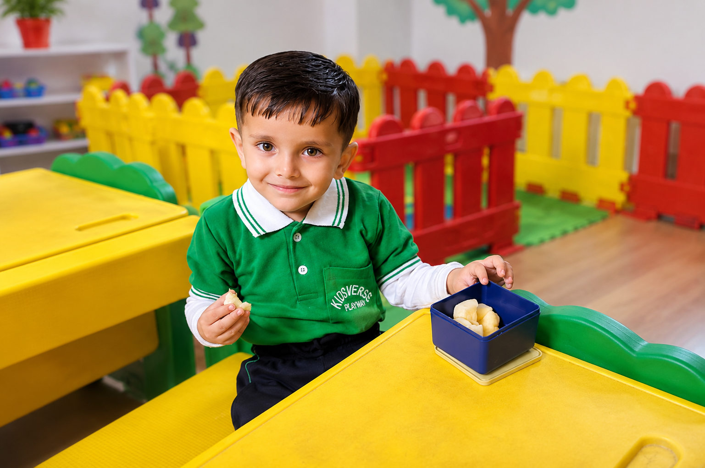
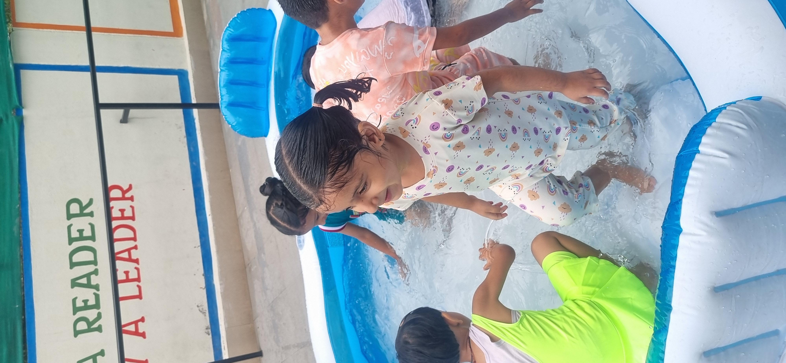
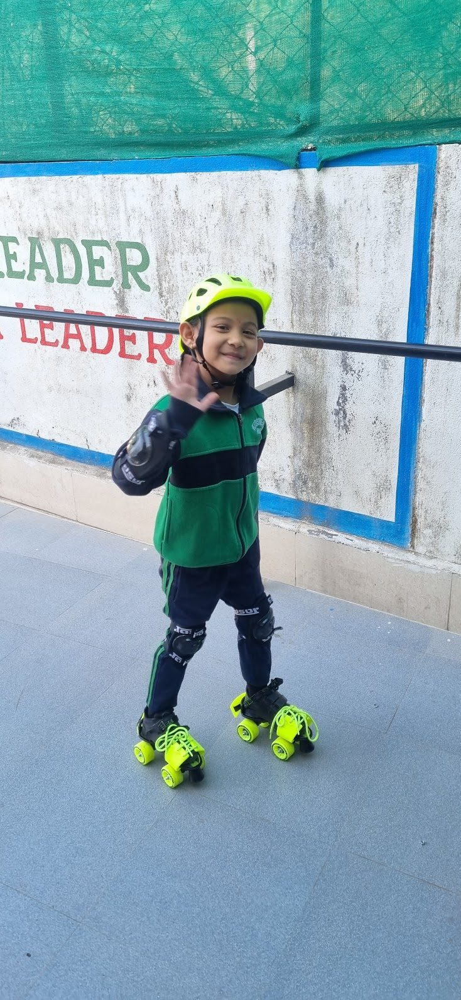

Kidsverse LKG Programme
Stronger basics for confident school learning.
LKG introduces phonics, pre-writing, number sense, expression, activity-based EVS, social confidence and classroom discipline through carefully guided learning.

LKG foundation
Learning becomes more structured while staying joyful.
LKG is where children begin connecting sounds to letters, numbers to quantities, and ideas to expression. Kidsverse keeps the pace caring and child-friendly while preparing children for stronger academic routines.
Learning areas
What children learn in LKG.
A balanced blend of language, maths, awareness, creativity and personal development.
Phonics & language
Letter sounds, vocabulary, picture talk, rhymes and simple speaking.
Pre-writing skills
Patterns, strokes, tracing, grip control and neat work habits.
Math readiness
Counting, number recognition, comparison, shapes, patterns and matching.
EVS awareness
Myself, family, animals, seasons, helpers and the world around us.
Creative projects
Art, craft, role play and hands-on activity corners.
Life skills
Listening, sharing, responsibility, manners and self-help habits.
A day at Kidsverse
Practice, play and participation in balance.
LKG routines introduce focused work without making learning feel heavy.
Greetings, rhymes and conversation.
Sound, letter and vocabulary practice.
Counting, shapes or number play.
Short guided written work.
Art, craft or role play.
Sharing, praise and day recap.
By the end of LKG
Your child is ready for deeper reading and writing practice.
Recognizes letters and soundsImproves pencil controlUnderstands basic numbersSpeaks with more confidenceCompletes short worksheetsFollows classroom routines


Parent questions
Common LKG questions.
Will my child start reading?
LKG builds sound and letter readiness that supports early reading development.
How much writing is expected?
Writing is introduced gradually through strokes, patterns, tracing and short practice.
Do children get individual attention?
Yes, children are guided based on confidence, pace and readiness.
LKG admission enquiry
Understand the right learning path for your child.
Share your details and our team will help with class fit, readiness and visit timing.